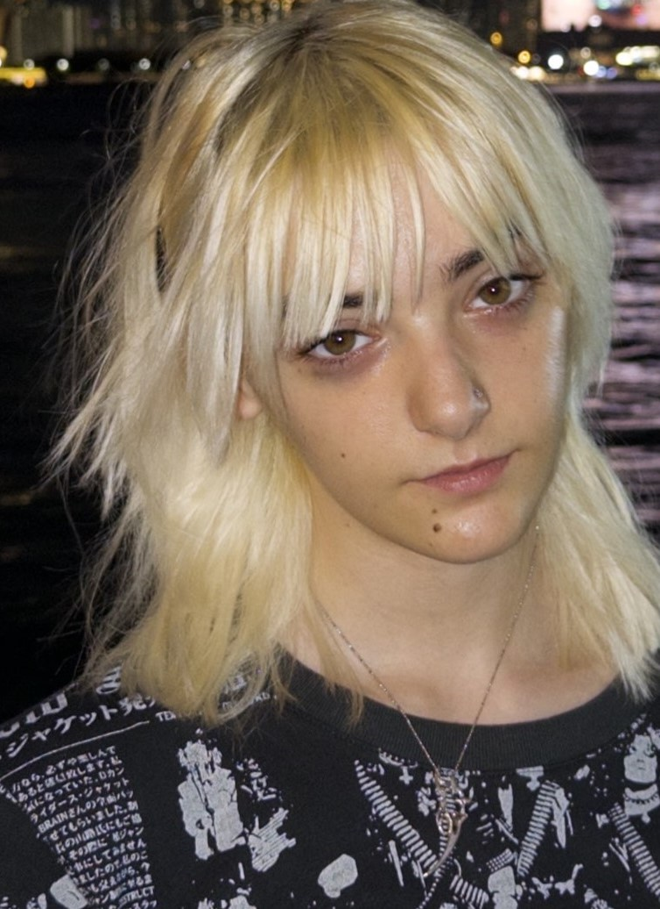
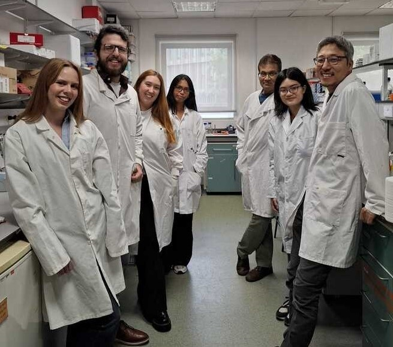
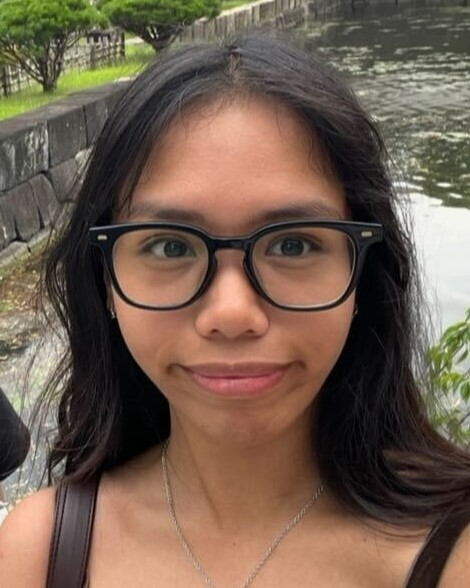
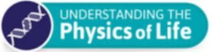
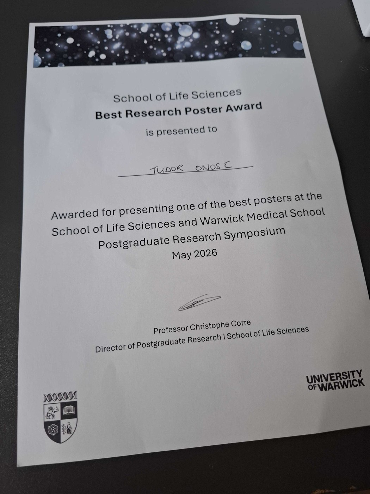
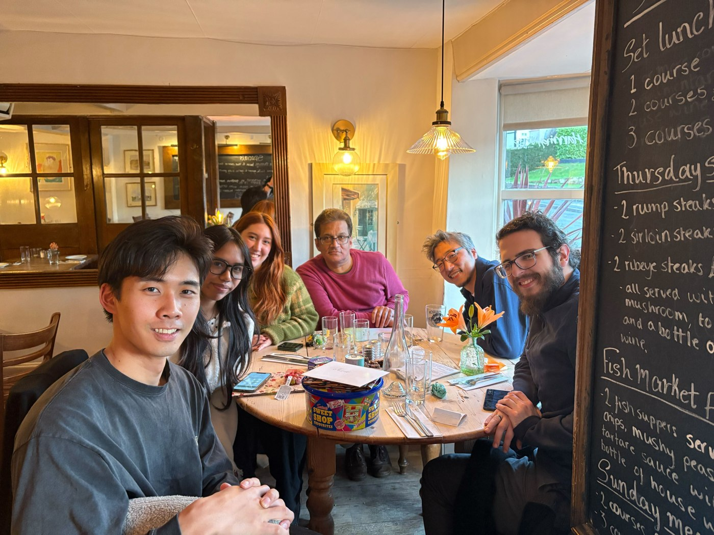
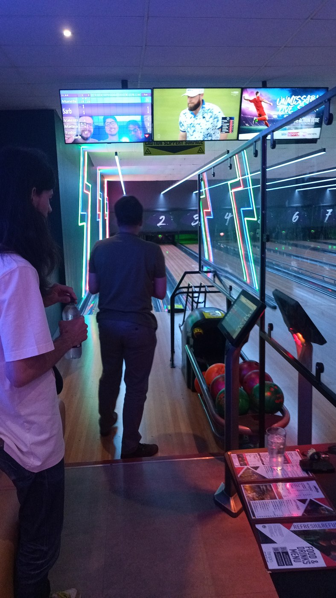
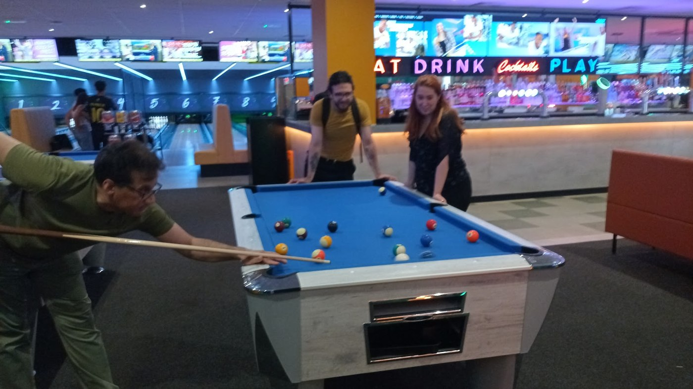

New lab members..
We have new lab members! Abby has returned to the lab, now as a PhD student, and Agatha joins us as an MBio student. It is great to have Abby back and to welcome Agatha to the lab. Welcome to you both!!


We have new lab members! Abby has returned to the lab, now as a PhD student, and Agatha joins us as an MBio student. It is great to have Abby back and to welcome Agatha to the lab. Welcome to you both!!

Lydia (UG, Biochemistry) spent this summer with us. During her project, she successfully created a range of constructs, transformed them into E. coli and B. subtilis, imaged the cells using fluorescence microscopy, and analysed the resulting data. We were very pleased to have you in the lab over the summer, Lydia, and wish you all the best in your future studies and career!

Abelaine Ladinez received a Physics of Life Student Summer Bursary Award to investigate dynamic signalling during E. coli biofilm formation.


Tudor Onose won a Best Research Poster Award.

Our collaboration with Giuseppe Maria Paternò at Politecnico di Milano explores a dipolar photoswitch and context-dependent bacterial bioelectrical circuitry.
Amanda Do joined the lab for a Leverhulme Trust-funded project on synapse-like communication in bacteria.
We welcomed Abby and visiting researcher Mitsuki. The lab gathered in Kenilworth for a farewell dinner for Mitsuki.

The team spent a day together bowling and playing pool.


Marina joined as a PhD student in April, Sarbjit joined as a postdoctoral researcher in July, and Valentin returned for a short postdoctoral stay.
Jess and Munehiro attended a Bioelectricity Cluster meeting in Oxford.
Our 2023 paper on optical modulation of bacterial membrane potential was recognised as a top-viewed article.